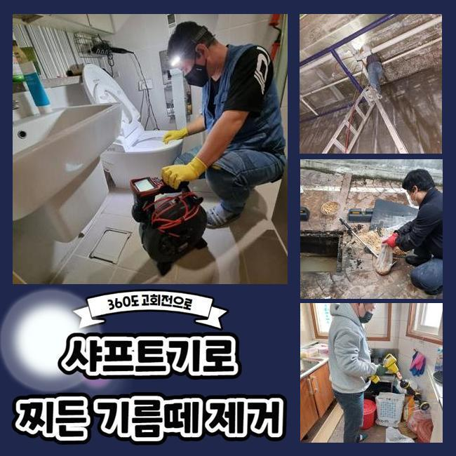
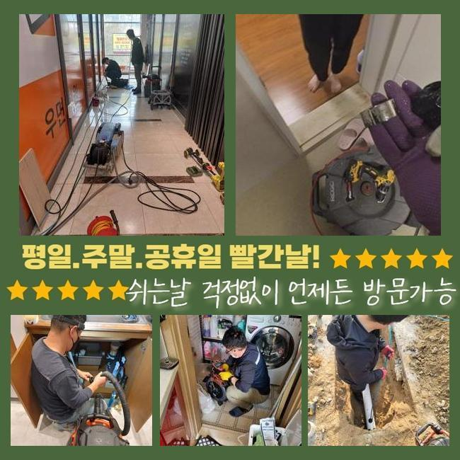
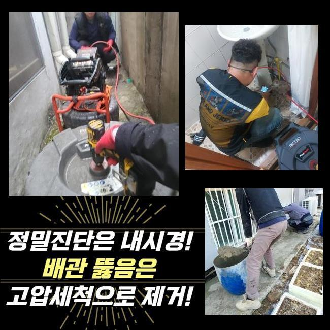
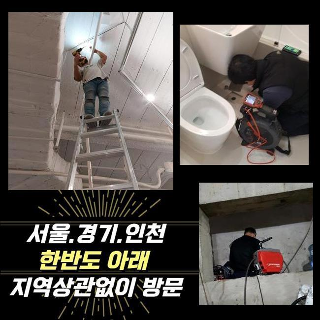
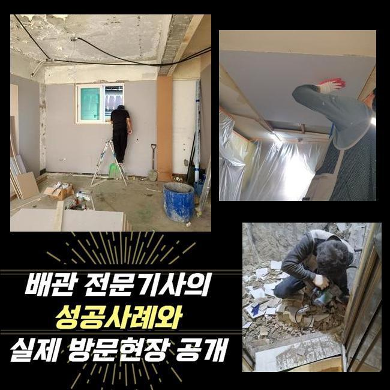
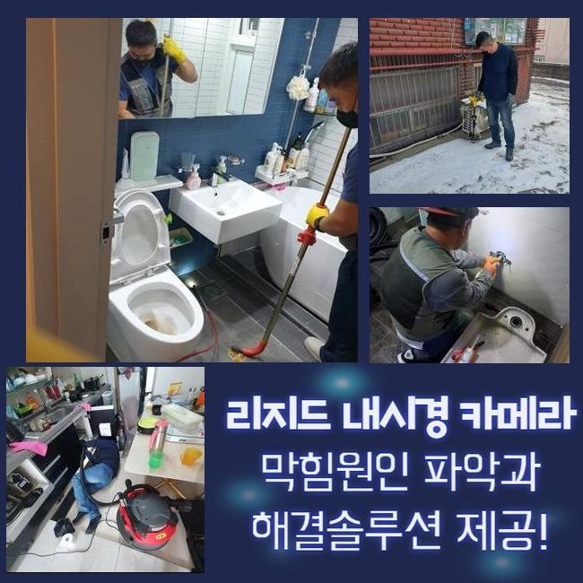
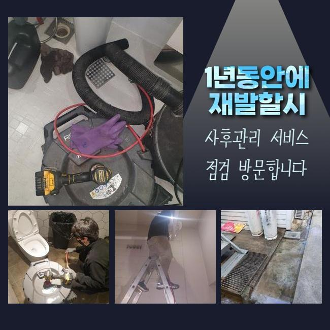

🏠 용인 신봉동변기역류 상현동 하수구뚫는업체 누수탐지
용인 신봉동 싱크대막힘 전문 시공 후기

📋 작업 개요
- 위치: 용인 신봉동, 신봉동, 용인
- 서비스 유형: 싱크대막힘, 변기막힘, 하수구막힘, 배관막힘, 누수수리, 역류해결, 뚫는업체, 배관청소, 고압세척, 설비공사, 배관보수, 악취차단
- 작업 일시: 2025. 1. 18. 15:40
- 업체명: 하수구수사대 (010-5615-2118)
🔍 문제 상황
용인 신봉동변기역류 상현동 하수구뚫는업체 누수탐지
하수가 정상적으로 나가지 못하면 일상 중에 어려움을 느낄 수 있어요
일반적 사례를 소개하면 부엌 안의 싱크대가 이물질이 유입되어서 계속 물이 차오르는 케이스도 다수이며 양변기 쪽이라거나 세탁공간에 물이 차올라서 이용상의 문제점이 빚어지기도 해요
공동주택 거주자에게서 접수를 받는다면 개별 배관이 막혔을 것이므로 실내에서 여러 장치를 돌려서 해소합니다
공용으로 쓰는 메인관로는 아파트의 경우라면 정해둔 시기마다 정례적으로 배관을 닦아내기 때문에 이상이 생기는 상황은 비교적 흔치 않아요
반면에 상업용 건물은 이런 막힘이 생겨날 가능성이 상대적으로 빈번한 편입니다
이번에 찾아갔던 상가건물 내에 깔린 메인관로가 차단되어 성업 중인 매장들의 설비들이 다 중단되어서 얼른 고쳐줘야 하겠다며 저희를 찾아주신 것이었습니다
현장을 둘러보았더니 주차장 인근에 깔린 메인관로의 구조가 보여서 작업 실행에 옮겼습니다
메인관이 가로막힌다면 집 안에 놓여있는 가지배관의 오류로 판단하기 보다는 더 굵은 배관로에 부식이 진행되었거나 이상 이물질이 차올라서 배수 효율이 떨어졌을 가능성이 농후합니다

🔎 원인 분석
💡 전문가 진단: 정밀 진단 장비를 사용하여 슬러지의 고착 여부를 판명하고 타격/세척 작업을 실시했습니다.
많은 양의 하수가 모여드는 배관 먼저 길을 만들고 그 이후로는 비교적 좁은 파이프라인까지 세척합니다
천장 외장재에 숨어있는 시설물이었기 때문에 고공사다리를 두고 작업을 실시하기로 계획하고 하수구의 차단 증상의 처리를 도와줄 장치들을 바로 가동하도록 준비시켰습니다
입구 부근만 통로를 내도 하단의 배관 파트는 아직 처치되지 못해서 메인배관을 수리할 시 관로의 중앙 부근까지 빠짐없이 정리해줘야 합니다
파이프캡을 열고 간격이 충분한지 보고 업무를 이행할만한 작업 환경을 만듭니다
내시경 기기라는 카메라로 어두워서 잘 보이지 않는 내부 현황을 관찰하기 시작했어요
어디까지 더러워진 것인지 방해 요인이 되었던 사유가 뭔지를 보다 상세하게 내역을 알아내야 작업 방향을 정할 수 있게 됩니다
메인배관이 손상을 입었다면 파이프의 사이즈가 대형에 속하기 때문에 소규모의 주거지에 찾아갔을 때 주로 구동하게 되는 석션으로는 수습이 힘들어요
연결부의 길이가 바닥까지 닿지 않기 때문에 찌꺼기를 모으기엔 집수통이 모자라요
기름 슬러지를 분쇄해서 정화 작업을 효과적으로 마무리 짓는 샤프트기도 장기적인 작업이 필요하며 여러 진입로를 열어야 해서 곤란할 것 같았어요

🔧 작업 과정
상가건물 내부의 하수도 중단이 일어나는 곳이라면 오염된 곳들을 다 치워줘서 말끔하게 만들어줘야 합니다
강한 물줄기를 쏴서 여기저기에 붙어있는 찌꺼기를 아예 사라질 수 있도록 청소하여 파이프 내부를 장애물 없는 환경으로 만들어야 거듭 일어나는 하수구 이슈를 처리해 낼 수 있습니다
하수구가 틈도 없이 차버리면 본격적인 청소작업을 실시하기가 어려우므로 우선은 스프링 기기가 닿이는 가장 밀집도가 높은 섹션을 틈이 나오도록 처리해서 통로를 회복시킨 이후에 본단계인 하수구 세척을 진행하기로 정했습니다
장치가 들어가려면 기름질이 뭉친 곳에 숨통이 트이게 하는 작업공간을 창출할 수 있었습니다
오늘 보여드린 상가는 상당히 다양한 외식업 업장들이 존재하는 상태였고 조리 도중 나온 기름기가 다수 물과 함께 방출되다보니 하수구 통로에 기름층이 코팅된 상황이었습니다
기름막은 뜨거운 물을 써도 영향을 덜 받기 때문에 찌꺼기가 한참 됐다면 석회화가 이뤄져서 딱 달라붙게 되는 장애물이 되고 맙니다
적기에 하수구 안의 청소 시공을 수행하지 않고 내버려두면 시간이 가면서 가장자리 부근부터 쌓여가면서 규모가 더 확대되면서 결국에는 직경이 차단되어 물의 흐름이 영영 이뤄지지 못하게 됩니다
유분층을 형성하는 슬러지를 속시원하게 제거하기 위한 루트는 최신식 고압세척기의 기능 덕분에 걸리는 부분 없이 오물이 붙은 하수구를 맑게 전환해줄 수 있었습니다
단단히 고착화된 슬러지가 물대포의 영향으로 떨어지고 잘게 분해되는 모습을 내시경을 안으로 넣어서 검토하면서 청소해나갔습니다
일부 장부는 튕겨져 나오던 방대한 양의 물질들이 서서히 삭제되어갔고 작은 입자만 겨우 겨우 남아있었습니다
고압세척을 시행할 때는 거의 예외 없이 노폐물이 누적된 포인트들을 두루 긁어내야만 또다시 차단이 되는 등의 일들이 차단됩니다
변성까지 이뤄진 기름기를 고압세척 작업으로 처리하고 관로를 살펴보는 카메라로 가장자리부터 틈까지 관찰하며 완벽히 개선됐나 확인했어요
초반에는 하수가 내려갈 빈틈이 아예 없다싶을 정도로 오염이 됐었던 시설물이지만 다양하게 뚫어내는 처리를 거쳤더니 전과 딴판으로 변화한 쾌적함을 느낄 수 있었습니다
기능상으로도 완벽한지 검사하고자 통수 테스트를 시행해서 순조롭게 물이 빠져나가는 모습을 명확하게 거듭 검사를 거쳐서 보고서 마감을 짓게 되었습니다


✅ 작업 완료
시공장비를 도달시키고자 구멍을 냈던 입구들은 보수하는 도구로 꼼꼼하게 덮어서 물샘이 빚어지지 않도록 깔끔하게 관리해 드렸습니다!
장기사용으로 결함이 생긴 하수구로 막대한 피해를 입고있던 상가 내의 업장에서 한자리에 물이 고정된데다 싱크대 수돗물의 역류 증세도 빚어졌던 상황을 바로잡고서 사무실로 향했습니다
사이즈가 남다른 배수로라면 쉬운 방식으로 낫기 어려운 사안이므로 경솔하게 자가조치를 무분별하게 취하다간 기초설비에 문제가 확대되는 사례도 아주 많습니다
주택 아파트 거주지면 어디든 특수한 공간이나 상업시설이라도 철저한 조사를 통해서 정상화를 해드리고 있으니 믿고 맡겨주시면 감사드리겠습니다!




⚠️ 베란다 누수 및 방수 관리 방법
- ✅ 비가 많이 올 때 창틀 주변이나 아래층 천장에 얼룩이 생기는지 정기적으로 확인해 보세요.
- ✅ 우수관 주변 실리콘 마감이 들뜨거나 깨진 틈새가 있는지 손상 여부를 수시로 체크하세요.
- ✅ 베란다 바닥 타일의 줄눈(메지)이 소실되면 그 틈으로 물이 침투하여 누수가 유발됩니다.
- ✅ 누수 의심 증상 발견 시 방치하면 아래층 손실이 커지므로 즉시 전문가의 진단을 받으십시오.
💡 핵심 정리
- 확실한 장비 작업(내시경 점검 및 샤프트 스케일링)으로 원인을 뿌리 뽑습니다.
- 작업 후 1년 이내에 동일한 부위 재발 시 100% 무상 A/S 서비스를 보장합니다.
- 서울 · 경기 · 인천 전 지역에 24시간 언제든 긴급 출동할 수 있도록 항시 대기 중입니다.
❓ 자주 묻는 질문 (FAQ)
🚨 용인 신봉동 싱크대막힘 문제로 고민이신가요?
정확한 원인 진단과 확실한 시공으로 재발 없는 해결을 약속드립니다.
24시간 긴급 출동 | 서울 · 경기 · 인천 전지역 | 1년 내 재발 시 무상 A/S